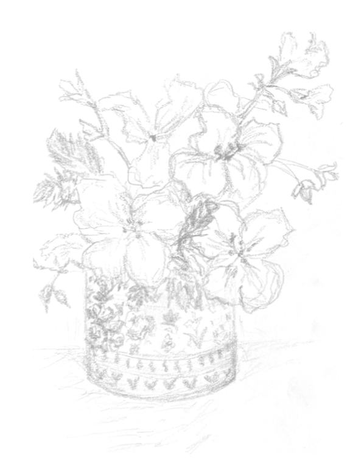
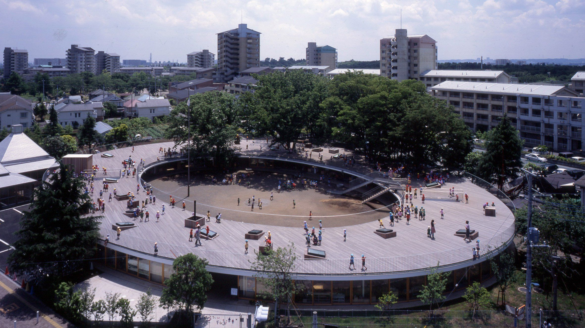

Leah
Atkinson
BA Hons Part 1 Architecture Degree
RIBA Wessex Prize 2026 — Best hand sketching in final project
RIBA President's Medals Bronze Award Nominee
Architecture
An urban neuroarchitecture exploration establishing responsive architectural frameworks that promote neurological recovery. The design replaces rigid configurations with lightweight, undulating timber structural grids imitating natural microclimates.
By blending delicate fine-liner tracing into real tectonic model fabrication frameworks, the study highlights deep light transitions that stimulate spatial curiosity and comfort within sterile metropolitan settings.
An organic layout analysis observing spatial thresholds and physical configuration patterns within famous circular school layouts. Investigating boundary transformations around mature trees to inspire collaborative child development environments.
The sequence maps active master plans alongside atmospheric cross sections, comparing seasonal changes across spring, autumn, and winter conditions via custom environmental renders.



A modular studio complex investigating sustainable heavy-mass components. The composition matches layered rammed earth against tinted cast structural blocks to contextually anchor community art workshops within their environment.
Circulation traces separate circular cells linked through lightweight aerial bridges, promoting continuous human flow and creative interaction.
Early academic explorations targeting precise scale, human movement metrics, and timber tectonic joinery. The investigations explore micro-pavilions and tranquil landscape interventions.
The sequence progresses from posture studies to intricate exploded framing drawing drafts and topographical structural layering models.
Art and Illustration
A sequence of active graphite and dynamic ink studies looking beyond sterile greyscale architecture. These explorations examine anatomy, dynamic wildlife form, and organic movement patterns to challenge corporate uniformity.
The fluid lines act as creative visual tools, injecting natural warmth and biological empathy straight back into clinical environments.
A massive collection of rapid pen architectural field observations logging landmark classical facades, historic public squares, and complex curvilinear deconstructivist assemblies.
These studies track direct structural scale, shadow boundaries, and urban density variations across notable design capitals, feeding straight into Leah's spatial workflow.